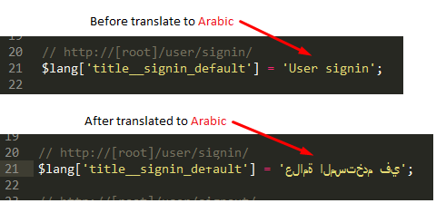

Multilingual support
Blueshield comes with a built-in multilingual support. not just only offering easy way to translate whole Blueshield system for any language. also offering advanced language switcher to switch between languages easily.
Switch between languages
Switching between languages is pretty easy for both Signedin/Loggedin and Signedout/Loggedout users.
If you are Signedin/Loggedin user, then you can simply switch between languages using user localization settings in user settings.
If you are Signedout/Loggedout user, then you can simply switch between languages using languages dropdown menu in main navigation bar.
Both Signedin/Loggedin and Signedout/Loggedout users can switch between languages on any page of Blueshied by simply parsing ?lang=[valid and available language code] GET variable in the URL.
If lang GET variable submited with a unavailable or invalid language code, then Blueshield will display friendly alert.
Translate
Translating Blueshield interfaces is pretty easy. let's see how we can do that.
Blueshield language files are sitting inside application/language/[language idiom or code] directories.
You can simply openup those language files using your favorite text editor and start translating. This is how those language files are looks like.
This how you should do the translate. Pretty easy right?

Make sure you save the file after translate. and it's better save those language files with character encoding utf-8.
Add languages
To add new languages to the Blueshield, follow bellow step by step instructions.
As a example let's add Spanish language support into Blueshield
- You need to find corresponding iso639-1|2 standard language code for your new language. you can find standard language codes for all languages from bellow URLs
http://www.w3schools.com/tags/ref_language_codes.asp
https://en.wikipedia.org/wiki/List_of_ISO_639-1_codes
https://www.loc.gov/standards/iso639-2/php/code_list.php
For Spanish corresponding language code is es.
- Openup localization.php configuration file sitting inside
application/config directory with your favoite text editor.

-
Add new language array for Spanish language in localization.php. and then save the file.
-
Openup user.php (controller file) sitting inside
application/controllers directory with your favorite text editor.
And then find the settings() method in user controller.
And then find the localization elseif code block.
And then add the new language code (in this example that would be "es") in to the form validation in_list[] comma seperated list and save the file.
-
Create a new language directory inside
application/language directory. name that directory with your new language code.
- Copy all the language files from another language directory and paste into newly created language directory (in this example "es").
And then you can simply translate those copy and pasted language files into your new language (in this example into Spanish). To get more more info about how to translate those language files, click here.
-
Now you need to do is adding new language into the language switching dropdown menu in main navigation bar.
To do that, simply openup main_nav.php view file sitting inside application/views/templates directory with your favorite text editor and add new language option into language switching dropdown menu.
You may be wondering why this dropdown menu not populate automatically using a simple foreach loop. there is a reason for that, the reason is, we want to maintain simplicity and flexibility. so user have freedom to impliment any kind of language switching interfaces. but if you have some little PHP knowledge, then you can simply loop through all the available language options in localization.php languages array. there is no anything stopping you.
To get good idea about how to add new language item into language switching dropdown menu, simply click on bellow image. that will open a animated .gif file.
Congratulations! you are now successfully added a new language (in this example Spanish language) into the Blueshield.
Remove languages
Removing existing languages in Blueshield is pretty easy. only you have to do is reverse the all steps that we are used to add languages into the Blueshield.
As a example let's remove Spanish language from Blueshield. To do that simply followup bellow step by step instructions.
- Remove language array for spanish from localization.php configuration file sitting inside
application/config directory.
- Remove "es" item in in_list comma seperated list that is in
settings() method inside user controller file sitting inside application/controllers directory.
- Remove es language directory in
application/language directory.
- Remove Spanish language item in language switching dropdown menu in main_nav.php file sitting inside
application/views/templates directory.
Congratulations! you are now successfully removed a new language (in this example Spanish language) in Blueshield.
{kind=link}
{kind=link}
{kind=link}
{kind=link}
{kind=link}
{kind=link}
{kind=link}
{kind=link}
{kind=link}
{kind=link}
{kind=link}
{kind=link}
{kind=link}
{kind=link}
{kind=link}
{kind=link}
{kind=link}
{kind=link}
{kind=link}